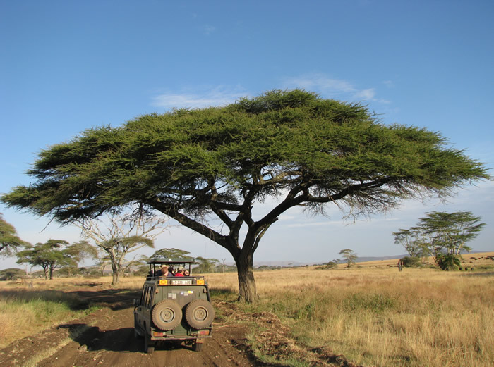
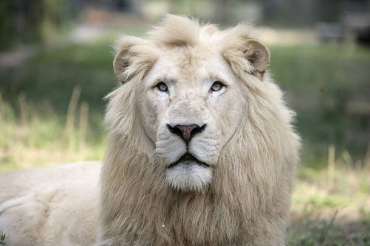

Razgledanje
Naš safari nudi organizovani prevoz džipom za razgledanje divljine uz pratnju vodiča. Uživajte u četvoro časovnom razgledanju životinja i prirode, uz kupljenu kartu dobijate dvogled. Naši vodiči su školovani biolozi koji rade u safariju i sa velikim intuziazmom će odgovoriti na svako vaše pitanje! U našem safariju možete videti: zebre, slonove, žirafe, geparde, antilope, nosoroge i naš najveci adut lavovi. Sa ponosom možemo da se pohvalimo da smo prvi safari na svetu po broju vrsta i broju jedinki lavova. Pored ugroženih vrsta Afričkog i Azijskom lava u našem rezervatu posedujemo dva bela lava! Naime to su retki slučajevi gde lav od roditelja nasledi recesivni gen bele boje krzna. Ova pojava nije albinizam jer lavovi nemaju tipičnu crvenu boju očiju. Mada je jedinkama sa belom bojom krzna znatno teže da preživi, mi se posebno trudimo da ove jedinstvene primere očuvamo i pomoću čipova za praćenje u svakom trenutku znamo gde se nalaze. I zaista su vredni truda i naši posetioci to i potvrdjuju.
Pored aranžmana za razgledanje naš safari nudi i lovačku turu. Lovačka tura zahteva da posedujete važeću lovačku dozvolu i uz pratnju našeg nadzornika možete da se upustite u pravu avanturu. Svako pucanje zahteva odobrenje od strane našeg nadzornika, kontaktirajte nas u vezi cenovnika: supervizor .
U slučaju da imate bilo kakva pitanja, pitajte nas odmah:
Email: poslovodja Telefon +381 11 422 256
Adresa: Saharski put bb

© 2014 Uroš Jovanović ®